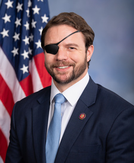

دن کرنشا
Dan Crenshaw
نماینده، جمهوریخواه، تگزاس
نمرهٔ دن کرنشا دربارهٔ ایران: ۸۰ از ۱۰۰.
- حمایت از شاهزاده رضا پهلویهنوز چیزی ثبت نشده
- خواستار رفتن جمهوری اسلامی۱۰۰
- همراهی با مردم ایراناقدامی ثبت نشده
- بدون ارتباط با مجاهدین خلق۵ ارتباط: ۲۰ امتیاز منفی
نمره میانگین سه معیار اول است (هر کدام که عدد داشته باشد)، منهای امتیازی که به خاطر ارتباط با مجاهدین خلق کم میشود. روش نمره دادن
حمایت از شاهزاده رضا پهلوی
هنوز چیزی ثبت نشده
با او دیدار کرده، علناً از او حمایت کرده یا از کاخ سفید خواسته با او همکاری کند. عضو کنگرهای که بگوید ایرانیها پادشاهی را رد کردهاند مخالف حساب میشود.
هیچ سندی نداریم که نشان بدهد دن کرنشا دربارهٔ شاهزاده رضا پهلوی چه گفته یا چه کرده. شما چیزی دیدهاید؟ یک سخنرانی، یک دیدار، یک پست، یک نامه.
سندش را بفرستیدخواستار رفتن جمهوری اسلامی
۱۰۰از ۱۰۰
به تحریم و فشار رأی مثبت میدهد. به هر توافقی که رژیم را سر پا نگه دارد و به بیرون کشیدن نیروهای آمریکا از درگیری رأی منفی میدهد.
- مثبت
رأی مخالف داد: قطعنامهٔ اختیارات جنگی دربارهٔ ایران (H.Con.Res. 93) رأی کلیدی، دو برابر حساب میشود
رئیسجمهور را موظف میکند نیروهای آمریکا را از درگیری با جمهوری اسلامی خارج کند، بهجز نیروهایی که برای دفاع از آمریکا یا یکی از متحدانش در برابر حملهٔ قریبالوقوع لازماند؛ مگر اینکه کنگره مجوز استفاده از نیروی نظامی بدهد. رأی مثبت به این قطعنامه یعنی رأی به بیرون کشیدن نیروهای آمریکا از جنگ با جمهوری اسلامی.
۱۵ سپتامبر ۲۰۲۶ · سند رسمی
- مثبت
رأی مخالف داد: قطعنامهٔ اختیارات جنگی دربارهٔ ایران (H.Con.Res. 89)
رئیسجمهور را موظف میکند نیروهای آمریکا را از درگیری با جمهوری اسلامی خارج کند. رأی مثبت به این قطعنامه یعنی رأی به بیرون کشیدن نیروهای آمریکا از جنگ با جمهوری اسلامی.
۲۳ ژوئیه ۲۰۲۶ · سند رسمی
- مثبت
رأی مخالف داد: قطعنامهٔ اختیارات جنگی دربارهٔ ایران (H.Con.Res. 86) رأی کلیدی، دو برابر حساب میشود
رئیسجمهور را موظف میکند نیروهای آمریکا را از درگیری با جمهوری اسلامی خارج کند، بهجز نیروهایی که برای دفاع از آمریکا یا یکی از متحدانش در برابر حملهٔ قریبالوقوع لازماند؛ مگر اینکه کنگره مجوز استفاده از نیروی نظامی بدهد. رأی مثبت به این قطعنامه یعنی رأی به بیرون کشیدن نیروهای آمریکا از جنگ با جمهوری اسلامی.
۳ ژوئن ۲۰۲۶ · سند رسمی
- مثبت
رأی مخالف داد: قطعنامهٔ اختیارات جنگی دربارهٔ ایران (H.Con.Res. 75)
رئیسجمهور را موظف میکند نیروهای آمریکا را از درگیری با جمهوری اسلامی خارج کند. رأی مثبت به این قطعنامه یعنی رأی به بیرون کشیدن نیروهای آمریکا از جنگ با جمهوری اسلامی.
۱۴ مه ۲۰۲۶ · سند رسمی
- مثبت
رأی مخالف داد: قطعنامهٔ اختیارات جنگی دربارهٔ ایران (H.Con.Res. 40)
رئیسجمهور را موظف میکند نیروهای آمریکا را از درگیری با جمهوری اسلامی خارج کند. رأی مثبت به این قطعنامه یعنی رأی به بیرون کشیدن نیروهای آمریکا از جنگ با جمهوری اسلامی.
۱۶ آوریل ۲۰۲۶ · سند رسمی
- مثبت
رأی موافق داد: تأکید دوباره بر اینکه جمهوری اسلامی همچنان بزرگترین دولت حامی تروریسم است (H.Res. 1099)
اعلام میکند سیاست آمریکا این است که جمهوری اسلامی همچنان بزرگترین دولت حامی تروریسم در جهان است. به حمایت آن از حزبالله، حماس و حوثیها و به آمریکاییهایی اشاره میکند که جمهوری اسلامی مسئول کشته شدنشان است. موضع مجلس نمایندگان علیه رژیم را در اولین روزهای جنگ ۲۰۲۶ رسماً ثبت میکند.
۵ مارس ۲۰۲۶ · سند رسمی
- مثبت
رأی مخالف داد: قطعنامهٔ اختیارات جنگی دربارهٔ ایران (H.Con.Res. 38) رأی کلیدی، دو برابر حساب میشود
رئیسجمهور را موظف میکند استفاده از نیروهای آمریکا در درگیری با جمهوری اسلامی را متوقف کند، مگر اینکه کنگره اعلام جنگ کند یا مجوز استفاده از نیروی نظامی بدهد. رأی مثبت به این قطعنامه یعنی رأی به بیرون کشیدن نیروهای آمریکا از جنگ با جمهوری اسلامی.
۵ مارس ۲۰۲۶ · سند رسمی
- مثبت
امضا کرد: قانون فشار حداکثری (H.R. 2570)
تحریمهای فشار حداکثری علیه جمهوری اسلامی را به قانون تبدیل میکند، رهبر جمهوری اسلامی را تحریم میکند و همهٔ تحریمها را تا وقتی نگه میدارد که رژیم به دوازده خواسته دربارهٔ برنامههای هستهای، موشکی و تروریستیاش عمل کند. همان سیاست فشار حداکثری است که به شکل لایحه درآمده.
۱ آوریل ۲۰۲۵ · سند رسمی
- مثبت
امضا کرد: قانون تشدید تحریمهای ایران، ۲۰۲۵ (H.R. 1422)
هر شرکت، بندر، پالایشگاه یا کشتی خارجی را که به فرآوری، صادرات یا فروش نفت و گاز جمهوری اسلامی کمک کند تحریم میکند. سراغ پول نفتی میرود که رژیم را سرپا نگه داشته است.
۱۸ فوریه ۲۰۲۵ · سند رسمی
- مثبت
رأی موافق داد: محکومیت حملهٔ پهپادی و موشکی جمهوری اسلامی به اسرائیل (H.Res. 1143)
حملهٔ پهپادی و موشکی جمهوری اسلامی به اسرائیل در آوریل ۲۰۲۴ را محکوم میکند و از حق اسرائیل برای دفاع از خود حمایت میکند. در برابر حملهٔ مستقیم رژیم به یکی از متحدان آمریکا میایستد.
۱۸ آوریل ۲۰۲۴ · سند رسمی
- مثبت
رأی موافق داد: قانون ایستادگی در برابر تجاوز حوثیها (H.R. 6046)
الزام میکند که حوثیها، نیروی مورد حمایت جمهوری اسلامی در یمن، در فهرست سازمانهای تروریستی خارجی قرار بگیرند و تحریم شوند. یکی از اصلیترین نیروهای نیابتی رژیم را زیر فشار حداکثری میگذارد.
۱۷ آوریل ۲۰۲۴ · سند رسمی
- مثبت
رأی موافق داد: قانون بررسی کاهش تحریمهای ایران (H.R. 4691)
به کنگره اجازه میدهد هر اقدام رئیسجمهور برای لغو تحریمهای جمهوری اسلامی یا صدور معافیت از آنها را بررسی کند و جلوی آن را بگیرد. دادن تخفیف تحریمی به رژیم را برای هر دولتی سختتر میکند.
۱۷ آوریل ۲۰۲۴ · سند رسمی
- مثبت
رأی موافق داد: لغو معافیتهای تحریمی ایران (H.R. 5947)
معافیتهایی را لغو میکند که به جمهوری اسلامی اجازه داد به حدود ۶ میلیارد دلار از پولهایش در خارج دسترسی پیدا کند و صدور معافیتهای جدید مشابه را ممنوع میکند. تخفیف تحریمی را که به رژیم داده شده بود پس میگیرد.
۱۷ آوریل ۲۰۲۴ · سند رسمی
- مثبت
رأی موافق داد: قانون «نه به تأمین مالی آمریکا برای ایران» (H.R. 5921)
به وزارت خزانهداری آمریکا اجازه نمیدهد برای معاملات مالی آمریکایی مرتبط با تجارت با ایران مجوز بدهد، مگر برای کالاهای بشردوستانه. از نمایندگان آمریکا هم میخواهد با کمک صندوق بینالمللی پول به جمهوری اسلامی مخالفت کنند. دست رژیم را از نظام مالی آمریکا و کمکهای مالی بینالمللی کوتاه میکند.
۱۵ آوریل ۲۰۲۴ · سند رسمی
- مثبت
رأی موافق داد: قانون «نه به تأمین مالی تروریسم جمهوری اسلامی» (H.R. 5961) رأی کلیدی، دو برابر حساب میشود
حدود ۶ میلیارد دلار پول ایران را که در توافق تبادل زندانیان سال ۲۰۲۳ به قطر منتقل شد مسدود میکند. برای این کار هر بانکی را که به جمهوری اسلامی در استفاده از این پول کمک کند تحریم میکند. نمیگذارد پول به دست رژیم برسد و توافقی را که به رژیم تخفیف تحریمی داده بود بیاثر میکند.
۳۰ نوامبر ۲۰۲۳ · سند رسمی
- مثبت
رأی موافق داد: جمهوری اسلامی هستهای قابلقبول نیست (H.Res. 559)
اعلام میکند سیاست آمریکا این است که جمهوری اسلامی مجهز به سلاح هستهای قابلقبول نیست، باید با هر وسیلهٔ لازم جلوی آن را گرفت و متحدان آمریکا، از جمله اسرائیل، آزادند برای جلوگیری از آن اقدام کنند. آمریکا را متعهد میکند که به هر وسیلهای جلوی برنامهٔ هستهای رژیم را بگیرد.
۱ نوامبر ۲۰۲۳ · سند رسمی
- مثبت
رأی موافق داد: اصلاحیهٔ اوگلز بر H.R. 4665: هیچ بودجهای برای خارج کردن سپاه از فهرست تروریستی خرج نشود
اصلاحیهای بر لایحهٔ بودجهٔ ۲۰۲۴ وزارت خارجه که اجازه نمیدهد هیچ پولی برای خارج کردن سپاه پاسداران از فهرست سازمانهای تروریستی خارجی خرج شود. ماندن اصلیترین نیروی مسلح رژیم در فهرست تروریستی را قطعی میکند.
۲۸ سپتامبر ۲۰۲۳ · سند رسمی
- مثبت
رأی موافق داد: قانون توقف پهپادهای ایرانی (H.R. 6089)
مشخص میکند قانون تحریمهای آمریکا شامل هر کسی میشود که به جمهوری اسلامی پهپاد جنگی بدهد یا بفروشد، یا از آن پهپاد جنگی بگیرد. تحریمهای برنامهٔ پهپادی رژیم را سختتر میکند.
۲۷ آوریل ۲۰۲۲ · سند رسمی
همراهی با مردم ایران
اقدامی ثبت نشده
از مردمی که در خیاباناند حمایت میکند: تحریم کسانی که آنها را میکشند، اینترنت آزاد وقتی رژیم قطعش میکند، و اینکه کنگره رسماً اعلام کند کنار مردم است.
اقدامی ثبت نشده.
بدون ارتباط با مجاهدین خلق
۲۰امتیاز منفی
مجاهدین خلق گروهی در تبعید به رهبری مریم رجوی است که کنار صدام حسین علیه ایران جنگید. امضای یکی از قطعنامههایش در کنگره یا سخنرانی در مراسمهایش «ارتباط» حساب میشود.
- ارتباط
امضا کرد: حمایت از خواست مردم ایران برای جمهوری دموکراتیک، سکولار و غیرهستهای ایران (H.Res. 166)
تروریسم و سرکوب رژیم را محکوم میکند و به حمایت از برنامهٔ دهمادهای مریم رجوی از شورای ملی مقاومت ایران، که با مجاهدین خلق مرتبط است، اشاره میکند. میگوید معترضان ایرانی «دیکتاتوری سلطنتی را رد کردهاند»، همانطور که حکومت دینی حاکم را. متن این قطعنامه از برنامهٔ دهمادهای مریم رجوی، رهبر شاخهٔ سیاسی مجاهدین خلق، حمایت میکند و میگوید ایرانیها پادشاهی را رد کردهاند. یعنی سر اینکه بعد از رژیم چه کسی رهبری کند، طرف یک گروه تبعیدی را میگیرد و مقابل شاهزاده رضا پهلوی میایستد. برای همین، امضای آن ارتباط با مجاهدین خلق حساب میشود.
۲۶ فوریه ۲۰۲۵ · سند رسمی
- ارتباط
امضا کرد: محکومیت تروریسم، جنگ نیابتی در منطقه و سرکوب داخلی رژیم ایران (H.Res. 1148)
تروریسم و جنگهای نیابتی رژیم را محکوم میکند، به برنامهٔ دهمادهای مریم رجوی اشاره میکند و میگوید ایرانیان هم «دیکتاتوری سلطنتی» را رد میکنند و هم «استبداد دینی» را. متن این قطعنامه از برنامهٔ دهمادهای مریم رجوی، رهبر شاخهٔ سیاسی مجاهدین خلق، حمایت میکند و میگوید ایرانیها پادشاهی را رد کردهاند. یعنی سر اینکه بعد از رژیم چه کسی رهبری کند، طرف یک گروه تبعیدی را میگیرد و مقابل شاهزاده رضا پهلوی میایستد. برای همین، امضای آن ارتباط با مجاهدین خلق حساب میشود.
۱۵ آوریل ۲۰۲۴ · سند رسمی
- ارتباط
امضا کرد: حمایت از خواست مردم ایران برای جمهوری دموکراتیک، سکولار و غیرهستهای ایران (H.Res. 100)
تروریسم رژیم و کشتن معترضان را محکوم میکند، به حمایت از برنامهٔ دهمادهای مریم رجوی، رهبر شورای ملی مقاومت ایران که با مجاهدین خلق مرتبط است، اشاره میکند و میگوید ایرانیان «دیکتاتوری سلطنتی و استبداد دینی را رد میکنند». متن این قطعنامه از برنامهٔ دهمادهای مریم رجوی، رهبر شاخهٔ سیاسی مجاهدین خلق، حمایت میکند و میگوید ایرانیها پادشاهی را رد کردهاند. یعنی سر اینکه بعد از رژیم چه کسی رهبری کند، طرف یک گروه تبعیدی را میگیرد و مقابل شاهزاده رضا پهلوی میایستد. برای همین، امضای آن ارتباط با مجاهدین خلق حساب میشود.
۷ فوریه ۲۰۲۳ · سند رسمی
- ارتباط
در جلسهٔ آنلاین سازمان جوامع ایرانیان آمریکا (OIAC) با امضاکنندگان قطعنامهٔ H.Res. 118 دربارهٔ حکم دادگاه علیه یک دیپلمات جمهوری اسلامی صحبت کرد.
confirms what many of us already know
۳ مارس ۲۰۲۱ · Iran: US Lawmakers Recognize Iranians' Fight for Democracy, Urge Action To Support It (NCRI)
- ارتباط
امضا کرد: حمایت از خواست مردم ایران برای جمهوری دموکراتیک، سکولار و غیرهستهای ایران (H.Res. 118)
تروریسم و نقض حقوق بشر رژیم را محکوم میکند، به حمایت از برنامهٔ دهمادهای مریم رجوی، رهبر شورای ملی مقاومت ایران که با مجاهدین خلق مرتبط است، اشاره میکند و میگوید ایرانیان «دیکتاتوری سلطنتی را رد کردهاند». متن این قطعنامه از برنامهٔ دهمادهای مریم رجوی، رهبر شاخهٔ سیاسی مجاهدین خلق، حمایت میکند و میگوید ایرانیها پادشاهی را رد کردهاند. یعنی سر اینکه بعد از رژیم چه کسی رهبری کند، طرف یک گروه تبعیدی را میگیرد و مقابل شاهزاده رضا پهلوی میایستد. برای همین، امضای آن ارتباط با مجاهدین خلق حساب میشود.
۱۱ فوریه ۲۰۲۱ · سند رسمی
دن کرنشا نمایندهٔ مردم تگزاس است. اگر آنجا زندگی میکنید، دفترش باید جواب شما را بدهد: crenshaw.house.gov
ایرانیها میتوانند به دن کرنشا اعتماد کنند؟
همینجا بگویید تا بقیه هم جوابتان را بدهند؛ فارسی یا انگلیسی.
گفتوگو
دن کرنشا
نظر، ویدیو و سند دربارهٔ دن کرنشا، فارسی و انگلیسی، همه یکجا. اینها حرف خود خوانندههاست، نه حرف ما.
اطلاعات خصوصی هیچکس را ننویسید. قوانین گفتوگو و اطلاعاتی که از شما نگه میداریم
بیایید با هم حرف بزنیم
برنامه در یوتیوب زنده پخش میشود و جمع ما هم در دیسکورد دور هم است. نمرهای را که فکر میکنید اشتباه دادهایم همانجا مطرح کنید.